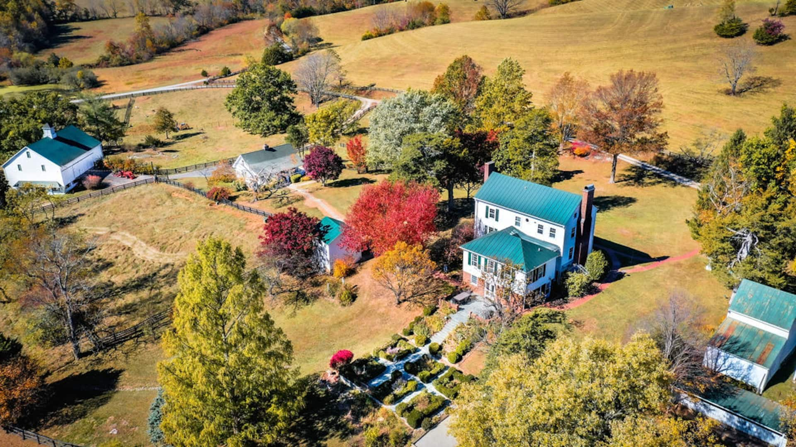

Main House
5 bedrooms · sleeps 104 full baths, 2 half baths, farmhouse kitchen, dining for 14.

Welcome
An 1840s farm stay on more than seventy acres in Roseland, Virginia.
Book a stay Things to do
The farm
High View is comprised of the Main House, the Guest House, and the Schoolhouse. Stays begin in the Main House; the other two can be added for a larger group.
4 full baths, 2 half baths, farmhouse kitchen, dining for 14.
3 baths, a short walk down the hill from the Main House.
Historic loft rooms. Shared baths in the Main House.
Gatherings
Reunions, retreats, and small celebrations — not large public events. Mention dates when you book.

Visit
Roseland, Virginia, at the foot of Wintergreen. Cattle and donkeys in the pastures, a pond and river on the land, and a walk to Blue Toad.
High View Farm